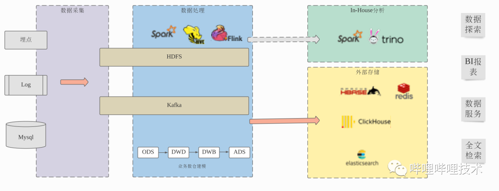
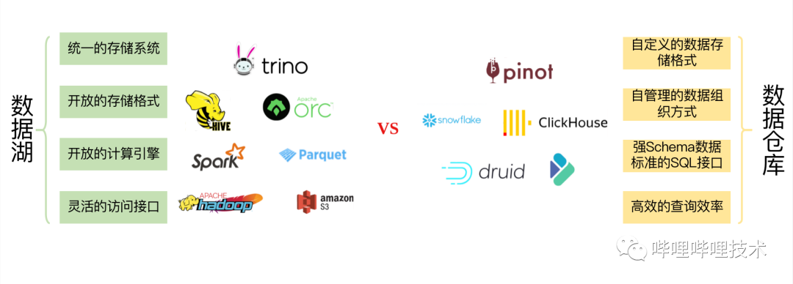

在B站，每天都有PB级的数据注入到大数据平台，经过离线或实时的ETL建模后，提供给下游的分析、推荐及预测等场景使用。面对如此大规模的数据，如何高效低成本地满足下游数据的分析需求，一直是我们重点的工作方向。我们之前的数据处理流程基本上是这样的：采集端将客户端埋点、服务端埋点、日志、业务数据库等数据收集到HDFS、Kafka等存储系统中，然后通过Hive、Spark、Flink等离线和实时引擎对数据进行ETL处理及数仓建模，数据存储使用ORC列式存储格式，用户可以通过Presto、Spark等引擎对数仓建模后的数据进行数据探索以及构建BI报表。对于大部分的数据服务和部分BI报表，Presto、Spark访问ORC格式数据可能无法满足用户对于查询响应时间的要求，这时需要将数据写入ClickHouse等这种专门的OLAP引擎或者进一步处理数据后写入HBase、Redis等KV存储系统中等方式解决。
当前的数据处理流程虽然在一定程度上可以满足目前的业务需求，但是整个流程的效率和成本都还有很大的提升空间，主要体现在：
- 为了提升查询效率，从Hive表出仓到ClickHouse、HBase、Redis、ElasticSearch、Mysql等外部系统中，需要额外的数据开发工作，额外的存储冗余，但同时拥有了更少的数据灵活性，复杂的组件支持增加了数据服务开发的成本，更长的数据处理流程也降低了稳定性和可靠性。
- 对于未出仓的数据，用户无论是进行数据探索还是使用BI报表，都还受SQL on Hadoop本身性能所限，和用户期望的交互式响应有很大差距。
本文主要介绍为了应对以上挑战，我们在湖仓一体方向上的一些探索和实践。
在讨论这个问题前，我们可能首先要明确两个概念：什么是数据湖？什么是数据仓库？这两个概念在业界都有大量的讨论，每个人的说法也不尽相同，我们尝试总结如下，对于数据湖：我们之前的大数据架构基本上是一个典型的数据湖架构，使用HDFS作为统一的存储系统，Hive metastore提供统一的Schema元数据管理，数据以CSV、JSON、ORC等开放存储格式存储在HDFS上，用户可以使用SQL、DataSet、FileSystem等各个层次的API使用Hive、Spark、Presto、Python等框架或语言访问数据。数据湖架构的好处是有非常大的灵活性，结构化、半结构化、非结构化数据都可以放在数据湖中，用户可以使用任意合适的引擎对所有的数据进行灵活的数据探索，几乎没有任何限制，但是它也存在很大的缺陷，最主要的就是数据管理和查询效率的问题。数据仓库（OLAP引擎）对于数据的要求相对更加严格，以ClickHouse为例，必须是预先定义的强Schema数据通过JDBC写入ClickHouse中，ClickHouse使用自己的存储格式存储数据，并且会对数据文件进行排序或者文件合并之类的数据组织优化，对外提供SQL接口，不会暴露内部的数据文件，提供索引等高级的查询加速特性，内部的计算引擎和存储格式也会有很多的一体协同优化，一般认为专门的数据仓库查询效率会优于数据湖架构，在B站的实践上，大部分场景，像ClickHouse对比Spark、Presto也确实有量级上的性能提升。
在我们实际的数据处理场景中，除了AI和数据探索等场景，探索未知数据的未知问题，比较依赖数据湖架构的灵活性，其实大部分的场景是基于已知数据的，即我们的数据开发同学，实际上是基于Hive表的强Schema数据，进行从ODS，DWD，DWB到ADS等各个业务数仓的分层建设，本质上我们是主要是基于数据湖的架构进行业务数仓的建设，如何提升这部分场景的查询效率，使用成本和用户体验是我们在这方面工作的核心内容。
湖仓一体是近两年大数据一个非常热门的方向，如何在同一套技术架构上同时保持湖的灵活性和仓的高效性是其中的关键。常见的是两条技术路线：一条是从分布式数仓向湖仓一体演进，在分布式数仓中支持CSV、JSON、ORC、PARQUET等开放存储格式，将数据的处理流程从ETL转换为ELT，数据注入到分布式数仓后，在分布式数仓中进行业务数仓的建模工作，比如AWS RedShift及SnowFlake等；另外一条是从数据湖向湖仓一体演进，基于开放的查询引擎和新引入的开放表存储格式达到分布式数仓的处理效率，这方面闭源商业产品的代表是DataBricks SQL，他们基于兼容Spark API的闭源Photon内核和DeltaLake存储格式以及S3对象存储的湖仓一体架构，宣称在TPC-DS Benchmark上性能超过专门的云数据仓库SnowFlake。在开源社区领域，Iceberg、Hudi、DeltaLake等项目的出现也为在SQL on Hadoop的数据湖技术方案上实现湖仓一体提供了基础的技术储备。在B站，基于我们之前的技术栈和实际的业务场景，我们选择了第二个方向，从数据湖架构向湖仓一体演进。对于B站的湖仓一体架构，我们想要解决的问题主要有两个：一是鉴于从Hive表出仓到外部系统（ClickHouse、HBase、ES等）带来的复杂性和存储开发等额外代价，尽量减少这种场景出仓的必要性。二是对于基于SQL on Hadoop的分析查询场景，提升查询效率，降低成本。我们基于Iceberg构建了我们的湖仓一体架构，在具体介绍B站的湖仓一体架构之前，我觉得有必要先讨论清楚两个问题，为什么Iceberg可以构建湖仓一体架构，以及我们为什么选择Iceberg？1. 为什么基于Iceberg可以构建湖仓一体架构？对比开放的SQL引擎、存储格式如：Presto、Spark、ORC、Parquet和分布式数仓如：ClickHouse、SnowFlake对应层的实现，其实差别不大，开源分布式引擎一直在逐渐补足SQL Runtime和存储层的一些影响性能的高级特性，比如Runtime CodeGen，向量化执行引擎，基于statistic的CBO，索引等等，当前两者最大的一个不同在于对于数据组织的管理能力。对于数据湖架构来说，数据文件在HDFS的分布组织是由写入任务决定的，而对于分布式数仓来说，数据一般是通过JDBC写入，数据的存储组织方式是由数仓本身决定的，所以数仓可以按照对于查询更加友好的方式组织数据的存储，比如对数据文件定期compact到合适的大小或者对数据进行合理排序和分组，对于大规模的数据来说，数据的优化组织可以大大提高查询的效率。Iceberg、Hudi、DeltaLake等新的表存储格式的出现，最主要的特性就是可以在HDFS上自组织管理表的metadata信息，从而提供了表数据的Snapshot及粗粒度的事务支持能力，基于此，我们可以在开放的查询引擎之外，异步地，透明地对Iceberg、Hudi、DeltaLake格式的数据进行重新的数据组织优化，从而达到了分布式数仓类似的效果。Iceberg、Hudi以及DeltaLake是基本同时期出现的开源表存储格式项目，整体的功能和定位也是基本相同，网上已经有很多相关对比介绍的文章，这里就不详细比较了，我们选择Iceberg的主要原因是：Iceberg在三个里面是表存储格式抽象的最好的，包括读写引擎、Table Schema、文件存储格式都是pluggable的，我们可以进行比较灵活的扩展，并保证和开源以及之前版本的兼容性，基于此我们也比较看好该项目的长远发展。下图是我们整体的湖仓一体架构，支持开放的Spark、Flink等引擎从Kafka、HDFS接入数据，然后Magnus服务会异步地拉起Spark任务对Iceberg数据进行重新的存储组织优化，我们主要是用Trino作为查询引擎，并引入Alluxio做Iceberg的元数据和索引数据的缓存加速。Magnus是我们湖仓一体架构的核心组件，它负责管理优化所有的Iceberg表中的数据。Iceberg本身是一个表存储格式，虽然其项目本身提供了基于Spark、Flink等用于合并小文件，合并metadata文件或者清理过期Snapshot数据等Action Job，但是要依赖外部服务调度这些Action Job，而Magnus正是承担这个角色。我们对Iceberg进行了扩展，当Iceberg表发生更新的时候，会发送一个event信息到Magnus服务中，Magnus服务维护一个队列用于保存这些commit event信息，同时Magnus内部的Scheduler调度器会持续消费event队列，并根据对应Iceberg表的元数据信息及相关的策略决定是否及如何拉起Spark任务优化Iceberg表的数据组织。对于丰富的多维分析场景，我们也有针对性的在Iceberg内核和其他方面进行了定制化增强，这里简要介绍两个方面：Z-Order排序和索引。Iceberg在表的metadata中记录了文件级别每个列的MinMax信息，并且支持小文件合并以及全局Linear排序(即Order By)，这两者配合起来，我们可以在很多查询场景实现非常好的DataSkiping效果，比如我们对于某个Iceberg表的数据文件按照字段a进行全局排序后，如果后续查询带有a的过滤条件，查询引擎会通过PredictePushDown把过滤条件下推到文件访问层，我们就可以根据MinMax索引把所有不需要的文件直接跳过，只访问数据所在的文件即可。在多维分析的实际场景中，一般都会有多个常用的过滤字段，Linear Order只对靠前字段有较好的Data Skip效果，通常会采用将低基数字段作为靠前的排序字段，从而才能保证对于后面的排序字段在过滤时也有一定的Data Skipping效果，但这无法从根本上解决问题，需要引入一种新的排序机制，使得多个常用的过滤字段均能够获得比较好的Data Skipping效果。Interleaved Order(即Z-Order)是在图像处理以及数仓中使用的一种排序方式，Z-ORDER曲线可以以一条无限长的一维曲线，穿过任意维度的所有空间，对于一条数据的多个排序字段，可以看作是数据的多个维度，多维数据本身是没有天然的顺序的，但是Z-Order通过一定规则将多维数据映射到一维数据上，构建z-value，从而可以基于一维数据进行排序，此外Z-Order的映射规则保证了按照一维数据排序后的数据同时根据多个排序字段聚集。参考wikipedia中的Z-Order介绍，可以通过对两个数据比特位的交错填充来构建z-value，如下图所示，对于(x, y)两维数据，数据值 0 ≤ x ≤ 7, 0 ≤ y ≤ 7，构建的z-values以及z-order顺序如下：
可以看到，如果根据z-values的顺序对数据进行排序，并平均分为4个文件，无论我们在查询中使用x还是y字段过滤进行点查询，都可以skip一半的不相干文件，如果数据量更大，效果会更好，也就是说，基于Z-Order分区存储的文件，可以在多个字段上拥有比较好的Data Skipping效果。我们对Spark进行了增强，支持Z-Order Range Partitioner用于对Iceberg数据进行文件间的排序组织，扩展了Iceberg表的元信息，用户可以自定义期望的Iceberg表的Distribution信息，支持按照Hash、Range、Z-Order等方式进行文件间数据排序，以及对应的OptimizeAction用于拉起Spark任务，按照用户定义的Distribution信息对Iceberg表进行重组织。具体详情可查询参考文献[1]（通过数据组织加速大规模数据分析）。索引
Iceberg默认存储文件级别每列的Min、Max信息，并用于TableScan阶段的文件过滤，基本等价于分布式数仓中的MinMax索引，MinMax索引对于排序后的字段DataSkipping效果很好，但是对于非排序字段，数据随机散布于各个文件，使用该字段过滤时，MinMax索引基本很难有文件Skip的效果，BloomFilter索引在这种场景下可以更好地发挥作用，尤其是当字段基数较大的时候。布隆过滤器实际上是一个很长的二进制向量和多个Hash函数，数据通过多个函数映射到二进制向量的比特位上，布隆过滤器的空间效率和查询时间都非常高效，非常适合用于检索一个元素是否存在于一个集合中。布隆过滤器的空间效率和查询时间都非常高效，但是在使用上也有局限之处，主要是它能够支持的过滤条件是有限的，只适用于：=、IN、NotNull等等值表达式，对于常见的Range过滤，比如>、>=、<、<=等是不支持的。为了支持更丰富的过滤表达式，我们引入了BitMap索引。BitMap也是一个非常常见的数据结构，将一组正整形数据映射到比特位，相比于BloomFilter，不存在Hash冲突的情况，所以不会出现False-Positive，但是一般需要更多的存储空间。对于高基数字段的BitMap索引，落地实现主要的问题在于：需要存储字段基数对应个BitMap，存储代价太大。
在Range过滤时，使用BitMap判断是否可以Skip文件时，需要访问大量BitMap，读取代价太大。
为了解决以上问题，我们引入了Bit-sliced Encoded Bitmap实现。具体详情可查询参考文献[2]（通过索引加速湖仓一体分析）。
基于Iceberg的湖仓一体方案在B站的数据分析场景正逐渐落地，我们目前已经支撑PB级的数据量，每天响应几万个查询，其中P90的查询可以在1s内响应，满足了多个运营分析数据服务交互式分析的需求。接下来，我们希望能够将湖仓一体架构作为我们OLAP数仓建模的基础，统一大部分的业务数仓分析层数据的存储和查询，简化技术架构，提升查询效率，节省资源成本。相比于传统的SQL on Hadoop技术栈，基于Iceberg的湖仓一体架构，在保证了和已有Hadoop技术栈的兼容性情况下，提供了接近分布式数仓的分析效率，兼顾了湖的灵活性和仓的高效性，从我们落地实践的经验看，对于用户基本透明，只是一种新的Hive表存储格式，没有更多使用和认知的门槛，和已有的大数据平台工具和服务也能非常小代价地集成。为了进一步提高在不同场景的查询效率和使用体验，我们还在以下方向对Iceberg进行进一步的增强：- 星型模型的数据分布组织，支持按照维度表字段对事实表数据进行排序组织和索引。
- 智能化，自动采集用户查询历史，分析查询模式，自适应调整数据的排序组织和索引等。
后续的进展我们会持续更新，欢迎感兴趣的小伙伴来和我们一起交流沟通。[1] 通过数据组织加速大规模数据分析:https://zhuanlan.zhihu.com/p/354334895[2] 通过索引加速湖仓一体分析:https://zhuanlan.zhihu.com/p/433622640如果这个文章对你有帮助，不要忘记 「在看」 「点赞」 「收藏」 三连啊喂！